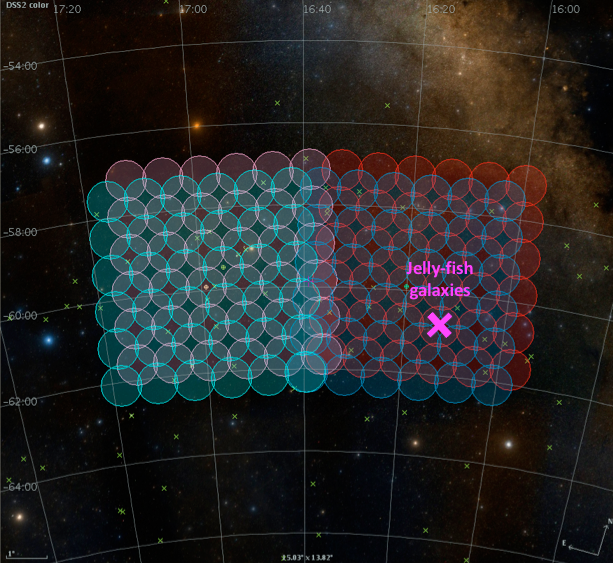
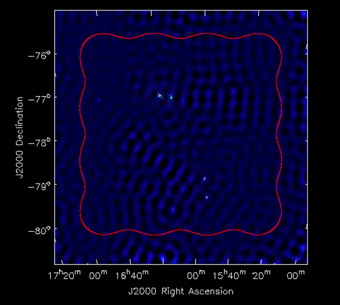
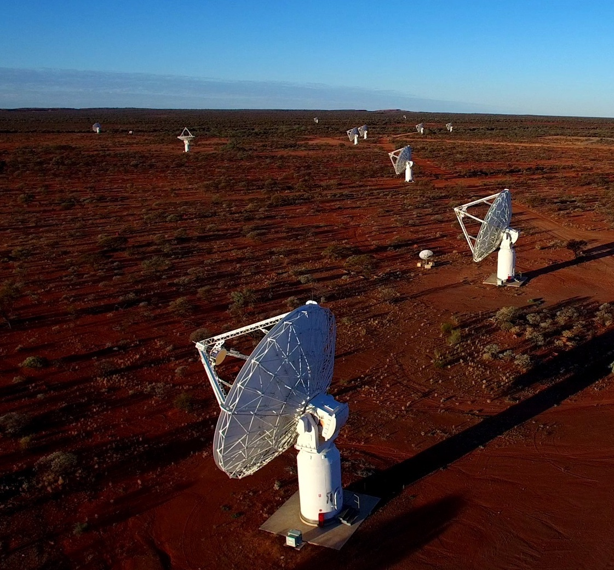

WALLABY Workflows
An AusSRC project

Mosaicking
Apply linear mosaicking to CASDA footprints to generate high quality WALLABY image cubes.

Source finding
Execution of source finding algorithms (sofia) on WALLABY image cubes.

ASKAP science
Assisting scientists with the computing for the full WALLABY survey - one of two projects currently running on the Australian SKA Pathfinder (ASKAP).